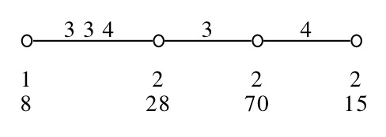
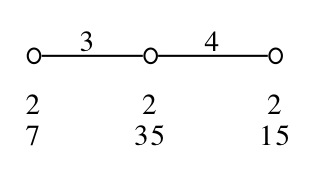
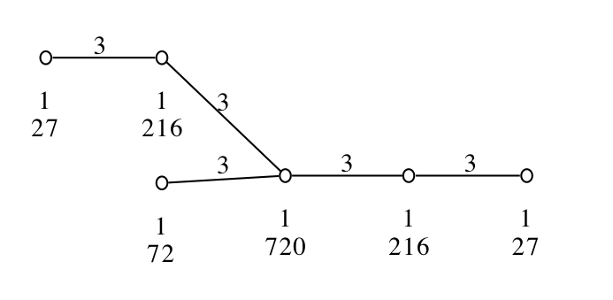
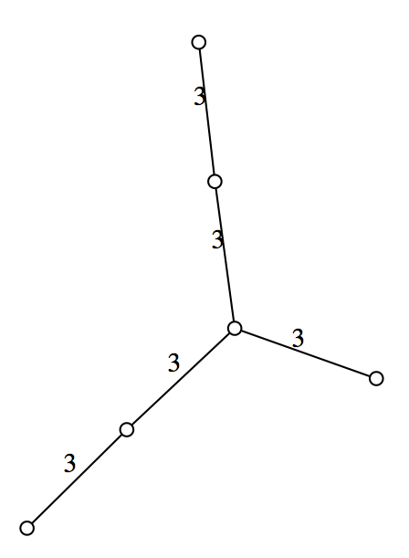

13.1-12 \^
13.1-13 \^
This part of FinInG depends on GRAPE.
Suppose we have an incidence geometry \(\Gamma\) (as defined in chapter 3), together with a group \(G\) of automorphisms of \(\Gamma\) such that \(G\) is transitive on the set of chambers of \(\Gamma\) (also defined in chapter 3). This implies that \(G\) is also transitive on the set of all elements of any chosen type \(i\). If we consider a chamber \(\{c_{1},c_{2},... ,c_{n}\}\) such that \(c_{i}\) is of type \(i\), we can look at the stabilizer \(G_{i}\) of \(c_{i}\) in \(G\). The subgroups \(G_{i}\) are called parabolic subgroups of \(\Gamma\). For a type \(i\), transitivity of \(G\) on the elements of type \(i\) gives a correspondence between the cosets of the stabilizer \(G_{i}\) and the elements of type \(i\) in \(\Gamma\). Two elements of \(\Gamma\) are incident if and only if the corresponding cosets have a nonempty intersection.
We now use the above observation to define an incidence structure from a group \(G\) together with a set of subgroups \(\{G_{1},G_{2},...,G_{n}\}\) . The type set is \(\{1,2,...,n\}\). By definition the elements of type \(i\) are the (right) cosets of the subgroup \(G_{i}\). Two cosets are incident if and only if their intersection is not empty. This is an incidence structure which is not necessarily a geometry (see Chapter 3 for definitions). In order to check whether a coset incidence structure is indeed a geometry you can use the command IsFlagTransitiveGeometry which (in case it returns true) guarantees that the argument is a geometry.
‣ IsCosetGeometry | ( category ) |
This category is a subcategory of IsIncidenceGeometry, and contains all coset geometries.
‣ CosetGeometry( G, l ) | ( operation ) |
Returns: the coset incidence structure defined by the list l of subgroups of the group G.
G must be a group and l is a list of subgroups of G. The subgroups in l will be the parabolic subgroups of the coset incidence structure whose rank equals the length of l.
gap> g:=SymmetricGroup(5); Sym( [ 1 .. 5 ] ) gap> g1:=Stabilizer(g,[1,2],OnSets); Group([ (4,5), (3,5), (1,2)(4,5) ]) gap> g2:=Stabilizer(g,[1,2,3],OnSets); Group([ (4,5), (2,3), (1,2,3) ]) gap> cg:=CosetGeometry(g,[g1,g2]); CosetGeometry( SymmetricGroup( [ 1 .. 5 ] ) ) gap> p:=Random(ElementsOfIncidenceStructure(cg,1)); <element of type 1 of CosetGeometry( SymmetricGroup( [ 1 .. 5 ] ) )> gap> q:=Random(ElementsOfIncidenceStructure(cg,2)); <element of type 2 of CosetGeometry( SymmetricGroup( [ 1 .. 5 ] ) )> gap> IsIncident(p,q); false gap> IsIncident(p,p); true gap> ParabolicSubgroups(cg); [ Group([ (4,5), (3,5), (1,2)(4,5) ]), Group([ (4,5), (2,3), (1,2,3) ]) ] gap> Rank(cg) = Size(last); true gap> BorelSubgroup(cg); Group([ (1,2), (4,5) ]) gap> AmbientGroup(cg); Sym( [ 1 .. 5 ] )
‣ IsIncident( ele1, ele2 ) | ( operation ) |
Returns: true if and only if ele1 and ele2 are incident
ele1 and ele2 must be two elements in the same coset geometry.
‣ ParabolicSubgroups( cg ) | ( operation ) |
Returns: the list of parabolic subgroups defining the coset geometry cg
‣ AmbientGroup( cg ) | ( operation ) |
Returns: the group used to define the coset geometry cg
cg must be a coset geometry.
‣ Borelsubgroup( cg ) | ( operation ) |
Returns: the Borel subgroup of de geometry cg
The Borel subgroup is equal to the stabilizer of a chamber. It corresponds to the intersection of all parabolic subgroups.
‣ RandomElement( cg ) | ( operation ) |
Returns: a random element of cg
cg must be a coset geometry.
‣ RandomFlag( cg ) | ( operation ) |
Returns: a random flag of cg
cg must be a coset geometry.
‣ RandomChamber( cg ) | ( operation ) |
Returns: a random chamber of cg
cg must be a coset geometry.
gap> g:=SymmetricGroup(5); Sym( [ 1 .. 5 ] ) gap> g1:=Stabilizer(g,[1,2],OnSets); Group([ (4,5), (3,5), (1,2)(4,5) ]) gap> g2:=Stabilizer(g,[[1,2],[3,4]],OnSetsSets); Group([ (1,2), (3,4), (1,3)(2,4) ]) gap> cg:=CosetGeometry(g,[g1,g2]); CosetGeometry( SymmetricGroup( [ 1 .. 5 ] ) ) gap> RandomElement(cg); <element of type 1 of CosetGeometry( SymmetricGroup( [ 1 .. 5 ] ) )> gap> Display(last); RightCoset(Group( [ (4,5), (3,5), (1,2)(4,5) ] ),(1,4,2,5,3)) gap> RandomFlag(cg); <Flag of coset geometry < CosetGeometry( SymmetricGroup( [ 1 .. 5 ] ) , [ Group( [ (4,5), (3,5), (1,2)(4,5) ] ), Group( [ (1,2), (3,4), (1,3)(2,4) ] ) ] ) >> gap> flg:=RandomFlag(cg); <Flag of coset geometry < CosetGeometry( SymmetricGroup( [ 1 .. 5 ] ) , [ Group( [ (4,5), (3,5), (1,2)(4,5) ] ), Group( [ (1,2), (3,4), (1,3)(2,4) ] ) ] ) >> gap> Type(flg); [ 1 ] gap> flg2:=RandomFlag(cg); <Flag of coset geometry < CosetGeometry( SymmetricGroup( [ 1 .. 5 ] ) , [ Group( [ (4,5), (3,5), (1,2)(4,5) ] ), Group( [ (1,2), (3,4), (1,3)(2,4) ] ) ] ) >> gap> Type(flg2); [ 2 ] gap> IsChamberOfIncidenceStructure(flg2); false gap> IsChamberOfIncidenceStructure(flg); false gap> Display(flg2); Flag of coset geometry CosetGeometry( SymmetricGroup( [ 1 .. 5 ] ) , [ Group( [ (4,5), (3,5), (1,2)(4,5) ] ), Group( [ (1,2), (3,4), (1,3)(2,4) ] ) ] ) with elements [ RightCoset(Group( [ (1,2), (3,4), (1,3)(2,4) ] ),(2,3,5)) ] gap> cham:=RandomChamber(cg); <Flag of coset geometry < CosetGeometry( SymmetricGroup( [ 1 .. 5 ] ) , [ Group( [ (4,5), (3,5), (1,2)(4,5) ] ), Group( [ (1,2), (3,4), (1,3)(2,4) ] ) ] ) >> gap> IsChamberOfIncidenceStructure(cham); true gap> ElementsOfFlag(cham); [ <element of type 1 of CosetGeometry( SymmetricGroup( [ 1 .. 5 ] ) )>, <element of type 2 of CosetGeometry( SymmetricGroup( [ 1 .. 5 ] ) )> ] gap> IsIncident(last[1],last[2]); true
‣ IsFlagTransitiveGeometry( cg ) | ( operation ) |
Returns: true if and only if the group G defining cg acts flag-transitively.
cg must be a coset geometry.
The group \(G\) used to define cg acts naturally on the elements of cg by right translation: a coset \(G_ig\) is mapped to \(G_i(gx)\) by an element \(x\in G\). This test can be quite time consuming. You can bind the attribute IsFlagTransitiveGeometry if you are sure the coset geometry is indeed flag-transitive.
gap> g:=SymmetricGroup(4); Sym( [ 1 .. 4 ] ) gap> g1:=Subgroup(g,[(1,2,3)]); Group([ (1,2,3) ]) gap> g2:=Subgroup(g,[(1,4)]); Group([ (1,4) ]) gap> g3:=Subgroup(g,[(1,2,3,4)]); Group([ (1,2,3,4) ]) gap> cg:=CosetGeometry(g,[g1,g2,g3]); CosetGeometry( SymmetricGroup( [ 1 .. 4 ] ) ) gap> IsFlagTransitiveGeometry(cg); false gap> cg2:=CosetGeometry(g,[g1,g2]); CosetGeometry( SymmetricGroup( [ 1 .. 4 ] ) ) gap> IsFlagTransitiveGeometry(cg2); true
‣ OnCosetGeometryElement( ele, g ) | ( operation ) |
Returns: the image of the CosetGeometryElement ele under the action of g
The group element g must belong to AmbientGroup(AmbientGeometry(ele)).
13.1-12 \^‣ \^( ele, g ) | ( operation ) |
Returns: an element of a coset geometry
This is an operation which returns the image of ele, an element of a coset incidence structure, under g, an element of AmbientGroup(AmbientGeometry(ele)).
13.1-13 \^‣ \^( flg, g ) | ( operation ) |
Returns: a flag of a coset geometry
This is an operation which returns the image of flg, a flag of a coset incidence structure, under g, an element of AmbientGroup(AmbientGeometry(flg)).
‣ IsFirmGeometry( cg ) | ( operation ) |
Returns: true if and only if cg is firm.
An incidence geometry is said to be firm if every nonmaximal flag is contained in at least two chambers. cg must be a coset geometry.
‣ IsThickGeometry( cg ) | ( operation ) |
Returns: true if and only if cg is thick.
An incidence geometry is said to be thick if every nonmaximal flag is contained in at least three chambers. cg must be a coset geometry.
‣ IsThinGeometry( cg ) | ( operation ) |
Returns: true if and only if cg is thin.
An incidence geometry is said to be thin if every rank one residue contains exactly 2 elements. This means that every comaximal flag is contained in exactly 2 chambers. cg must be a coset geometry.
gap> g:=SymmetricGroup(8);; gap> pabs:=[];; gap> pabs[1]:=Stabilizer(g,1);; pabs[2]:=Stabilizer(g,2);; gap> pabs[3]:=Stabilizer(g,3);; gap> pabs[4]:=Stabilizer(g,[1,2,3,4],OnSets);; gap> pabs[5]:=Stabilizer(g,[1,2,3,4,5],OnSets);; gap> pabs[6]:=Stabilizer(g,6);; pabs[7]:=Stabilizer(g,7);; gap> cg:=CosetGeometry(g,pabs); CosetGeometry( SymmetricGroup( [ 1 .. 8 ] ) ) gap> IsFirmGeometry(cg); true gap> IsThinGeometry(cg); true gap> IsThickGeometry(cg); false gap> truncation:=CosetGeometry(g,pabs{[1..5]}); CosetGeometry( SymmetricGroup( [ 1 .. 8 ] ) ) gap> IsFirmGeometry(truncation); true gap> IsThinGeometry(truncation); false gap> IsThickGeometry(truncation); false gap> truncation2:=CosetGeometry(g,pabs{[4,5]}); CosetGeometry( SymmetricGroup( [ 1 .. 8 ] ) ) gap> IsFirmGeometry(truncation2); true gap> IsThinGeometry(truncation2); false gap> IsThickGeometry(truncation2); true
‣ IsConnected( cg ) | ( operation ) |
Returns: true if and only if cg is connected.
A geometry is connected if and only if its incidence graph is connected. cg must be a coset geometry.
‣ IsResiduallyConnected( cg ) | ( operation ) |
Returns: true if and only if cg is residually connected.
A geometry is residually connected if the incidence graphs of all its residues of rank at least 2 are connected. cg must be a coset geometry.
This test is quite time consuming. You can bind the attribute IsResiduallyConnected if you are sure the coset geometry is indeed residually connected.
gap> ps:=HyperbolicQuadric(7,2); Q+(7, 2) gap> g:=IsometryGroup(ps);; gap> reps:=RepresentativesOfElements(ps); [ <a point in Q+(7, 2)>, <a line in Q+(7, 2)>, <a plane in Q+(7, 2)>, <a solid in Q+(7, 2)> ] gap> solids:=Orbit(g,reps[4]);; gap> ps:=HyperbolicQuadric(7,2); Q+(7, 2) gap> g:=IsometryGroup(ps);; gap> reps:=RepresentativesOfElements(ps); [ <a point in Q+(7, 2)>, <a line in Q+(7, 2)>, <a plane in Q+(7, 2)>, <a solid in Q+(7, 2)> ] gap> h:=DerivedSubgroup(g);; # to get greek and latin solids gap> orbs:=FiningOrbits(h,Solids(ps));; 50%..100%..gap> List(orbs, Size); [ 135, 135 ] gap> Filtered(orbs[2], s -> ProjectiveDimension(Meet(orbs[1][1],s))=2); # to [ <a solid in Q+(7, 2)>, <a solid in Q+(7, 2)>, <a solid in Q+(7, 2)>, <a solid in Q+(7, 2)>, <a solid in Q+(7, 2)>, <a solid in Q+(7, 2)>, <a solid in Q+(7, 2)>, <a solid in Q+(7, 2)>, <a solid in Q+(7, 2)>, <a solid in Q+(7, 2)>, <a solid in Q+(7, 2)>, <a solid in Q+(7, 2)>, <a solid in Q+(7, 2)>, <a solid in Q+(7, 2)>, <a solid in Q+(7, 2)> ] gap> #find a latin incident with the greek which is orbs[1][1] gap> # Now we have a chamber gap> goodreps:=[reps[1],reps[2],orbs[1][1],last[1]]; [ <a point in Q+(7, 2)>, <a line in Q+(7, 2)>, <a solid in Q+(7, 2)>, <a solid in Q+(7, 2)> ] gap> pabs:=List(goodreps, r -> FiningStabiliser(h,r)); [ <projective collineation group of size 1290240 with 2 generators>, <projective collineation group of size 110592 with 4 generators>, <projective collineation group of size 1290240 with 2 generators>, <projective collineation group of size 1290240 with 4 generators> ] gap> cos:=CosetGeometry(h,pabs); CosetGeometry( Group( [ ProjElWithFrob(NewMatrix(IsCMatRep,GF(2,1),8,[ [ Z(2)^0, Z(2)^0, Z(2)^0, 0*Z(2), 0*Z(2), Z(2)^0, Z(2)^0, Z(2)^0 ], [ 0*Z(2), Z(2)^0, 0*Z(2), 0*Z(2), 0*Z(2), 0*Z(2), 0*Z(2), 0*Z(2) ], [ 0*Z(2), Z(2)^0, Z(2)^0, 0*Z(2), 0*Z(2), 0*Z(2), 0*Z(2), Z(2)^0 ], [ 0*Z(2), 0*Z(2), 0*Z(2), Z(2)^0, Z(2)^0, 0*Z(2), 0*Z(2), 0*Z(2) ], [ 0*Z(2), Z(2)^0, Z(2)^0, 0*Z(2), 0*Z(2), Z(2)^0, 0*Z(2), Z(2)^0 ], [ 0*Z(2), Z(2)^0, 0*Z(2), 0*Z(2), Z(2)^0, 0*Z(2), 0*Z(2), 0*Z(2) ], [ 0*Z(2), Z(2)^0, 0*Z(2), 0*Z(2), 0*Z(2), 0*Z(2), 0*Z(2), Z(2)^0 ], [ 0*Z(2), 0*Z(2), 0*Z(2), Z(2)^0, 0*Z(2), 0*Z(2), Z(2)^0, 0*Z(2) ],]),IdentityMapping( GF(2) )), ProjElWithFrob(NewMatrix(IsCMatRep,GF(2, 1),8,[[ Z(2)^0, 0*Z(2), 0*Z(2), 0*Z(2), 0*Z(2), 0*Z(2), 0*Z(2), 0*Z(2) ], [ 0*Z(2), Z(2)^0, 0*Z(2), 0*Z(2), 0*Z(2), 0*Z(2), 0*Z(2), 0*Z(2) ], [ 0*Z(2), 0*Z(2), Z(2)^0, 0*Z(2), 0*Z(2), 0*Z(2), 0*Z(2), Z(2)^0 ], [ 0*Z(2), 0*Z(2), 0*Z(2), Z(2)^0, Z(2)^0, 0*Z(2), 0*Z(2), 0*Z(2) ], [ 0*Z(2), 0*Z(2), Z(2)^0, 0*Z(2), 0*Z(2), Z(2)^0, 0*Z(2), Z(2)^0 ], [ 0*Z(2), 0*Z(2), 0*Z(2), 0*Z(2), Z(2)^0, 0*Z(2), 0*Z(2), 0*Z(2) ], [ 0*Z(2), 0*Z(2), 0*Z(2), 0*Z(2), 0*Z(2), 0*Z(2), 0*Z(2), Z(2)^0 ], [ 0*Z(2), 0*Z(2), 0*Z(2), Z(2)^0, 0*Z(2), 0*Z(2), Z(2)^0, 0*Z(2) ],]),IdentityMapping( GF(2) )), ProjElWithFrob(NewMatrix(IsCMatRep,GF(2, 1),8,[[ Z(2)^0, 0*Z(2), 0*Z(2), 0*Z(2), Z(2)^0, 0*Z(2), 0*Z(2), 0*Z(2) ], [ 0*Z(2), Z(2)^0, 0*Z(2), 0*Z(2), 0*Z(2), 0*Z(2), Z(2)^0, 0*Z(2) ], [ 0*Z(2), 0*Z(2), Z(2)^0, 0*Z(2), 0*Z(2), 0*Z(2), 0*Z(2), 0*Z(2) ], [ 0*Z(2), 0*Z(2), 0*Z(2), Z(2)^0, 0*Z(2), 0*Z(2), 0*Z(2), 0*Z(2) ], [ 0*Z(2), 0*Z(2), 0*Z(2), 0*Z(2), Z(2)^0, 0*Z(2), 0*Z(2), 0*Z(2) ], [ 0*Z(2), Z(2)^0, 0*Z(2), 0*Z(2), 0*Z(2), Z(2)^0, 0*Z(2), 0*Z(2) ], [ 0*Z(2), 0*Z(2), 0*Z(2), 0*Z(2), 0*Z(2), 0*Z(2), Z(2)^0, 0*Z(2) ], [ Z(2)^0, 0*Z(2), 0*Z(2), 0*Z(2), Z(2)^0, 0*Z(2), 0*Z(2), Z(2)^0 ],]),IdentityMapping( GF(2) )) ] ) ) gap> IsConnected(cos); true gap> IsResiduallyConnected(cos); true gap> time; 419960
‣ StandardFlagOfCosetGeometry( cg ) | ( operation ) |
Returns: standard chamber of cg
The standard chamber just consists of all parabolic subgroups (i.e. the trivial cosets of these subgroups). The object returned is a FlagOfIncidenceStructure. cg must be a coset geometry.
‣ FlagToStandardFlag( cg, fl ) | ( operation ) |
Returns: element of the defining group of cg which maps fl to the standard chamber of cg.
fl must be a chamber given as a list of cosets of the parabolic subgroups of cg.
gap> L:=SimpleLieAlgebra("D",8,Rationals); <Lie algebra of dimension 120 over Rationals> gap> rs:=RootSystem(L); <root system of rank 8> gap> w:=WeylGroup(rs); <matrix group with 8 generators> gap> gens:=GeneratorsOfGroup(w);; gap> pabs:=List(gens, g -> Group(Difference(gens, [g]))); [ <matrix group with 7 generators>, <matrix group with 7 generators>, <matrix group with 7 generators>, <matrix group with 7 generators>, <matrix group with 7 generators>, <matrix group with 7 generators>, <matrix group with 7 generators>, <matrix group with 7 generators> ] gap> g:=Group(gens); <matrix group with 8 generators> gap> cg:=CosetGeometry(g,pabs);; gap> cham:=RandomChamber(cg);; # Time of last command: 23945 ms gap> FlagToStandardFlag(cg,cham); # Time of last command: 1720 ms [ [ 0, 0, 0, 0, 1, -1, 0, 0 ], [ 0, 0, 0, 1, 0, -1, 0, 0 ], [ 0, 0, 0, 1, 0, 0, -1, -1 ], [ 1, -1, 0, 1, 0, 0, -1, -1 ], [ 0, -1, 0, 1, 0, 0, -1, -1 ], [ 0, -1, 0, 1, 0, 0, 0, -2 ], [ 0, -1, 1, 0, 0, 0, 0, -1 ], [ 0, -1, 0, 1, 0, 0, 0, -1 ] ] gap> cham^last = StandardFlagOfCosetGeometry(cg); # Time of last command:1005 ms true
‣ CanonicalResidueOfFlag( cg, fl ) | ( operation ) |
Returns: coset geometry isomorphic to residue of fl in cg
cg must be a coset incidence structure and fl must be a flag in that incidence structure. The returned coset incidence structure for a flag \(\{G_{i_1}g_{i_1},G_{i_2}g_{i_2},\ldots , G_{i_k}g_{i_k}\}\) is the coset incidence structure defined by the group \(H:=\cap_{j=1}^{k}G_{i_j}\) and parabolic subgroups \(G_{j}\cap H\) for \(j\) not in the type set \(\{i_1,i_2,\ldots ,i_k\}\) of fl.
‣ ResidueOfFlag( fl ) | ( operation ) |
Returns: the residue of fl in AmbientGeometry(fl).
This is a CosetGeometry method for the ResidueOfFlag operation given in Chapter 3. Note that the related operation CanonicalResidueOfFlag takes two arguments.
gap> pg:=SymplecticSpace(5,2); W(5, 2) gap> pi:=Random(Planes(pg)); <a plane in W(5, 2)> gap> l:=Random(Lines(pi)); <a line in W(5, 2)> gap> p:=Random(Points(l)); <a point in W(5, 2)> gap> g:=CollineationGroup(pg); PGammaSp(6,2) gap> g1:=Stabilizer(g,p); <projective collineation group of size 23040 with 3 generators> gap> g2:=Stabilizer(g,l); <projective collineation group of size 4608 with 4 generators> gap> g3:=Stabilizer(g,pi); <projective collineation group of size 10752 with 3 generators> gap> cg:=CosetGeometry(g, [g1,g2,g3]); CosetGeometry( PGammaSp(6,2) ) gap> RandomFlag(cg); # Time of last command: 10745 ms <Flag of coset geometry < CosetGeometry( PGammaSp(6,2) , [ Group( [ ProjElWithFrob(NewMatrix(IsCMatRep,GF(2,1),6,[ [ Z(2)^0, Z(2)^0, 0*Z(2), 0*Z(2), Z(2)^0, Z(2)^0 ], [ Z(2)^0, Z(2)^0, 0*Z(2), 0*Z(2), Z(2)^0, 0*Z(2) ], [ 0*Z(2), 0*Z(2), 0*Z(2), Z(2)^0, 0*Z(2), 0*Z(2) ], [ 0*Z(2), 0*Z(2), Z(2)^0, 0*Z(2), 0*Z(2), 0*Z(2) ], [ 0*Z(2), Z(2)^0, 0*Z(2), 0*Z(2), 0*Z(2), Z(2)^0 ], [ Z(2)^0, Z(2)^0, 0*Z(2), 0*Z(2), 0*Z(2), 0*Z(2) ],]),IdentityMapping( GF(2) )), ProjElWithFrob(NewMatrix(IsCMatRep,GF(2,1),6,[ [ Z(2)^0, Z(2)^0, 0*Z(2), 0*Z(2), 0*Z(2), Z(2)^0 ], [ Z(2)^0, Z(2)^0, 0*Z(2), Z(2)^0, Z(2)^0, Z(2)^0 ], [ Z(2)^0, 0*Z(2), Z(2)^0, Z(2)^0, Z(2)^0, Z(2)^0 ], [ 0*Z(2), 0*Z(2), 0*Z(2), Z(2)^0, 0*Z(2), 0*Z(2) ], [ Z(2)^0, Z(2)^0, 0*Z(2), Z(2)^0, 0*Z(2), 0*Z(2) ], [ Z(2)^0, 0*Z(2), 0*Z(2), Z(2)^0, Z(2)^0, 0*Z(2) ],]),IdentityMapping( GF(2) )), ProjElWithFrob(NewMatrix(IsCMatRep,GF(2,1),6,[ [ Z(2)^0, 0*Z(2), Z(2)^0, 0*Z(2), Z(2)^0, Z(2)^0 ], [ Z(2)^0, 0*Z(2), 0*Z(2), Z(2)^0, 0*Z(2), 0*Z(2) ], [ 0*Z(2), 0*Z(2), 0*Z(2), Z(2)^0, Z(2)^0, 0*Z(2) ], [ 0*Z(2), Z(2)^0, Z(2)^0, Z(2)^0, 0*Z(2), 0*Z(2) ], [ 0*Z(2), Z(2)^0, Z(2)^0, Z(2)^0, Z(2)^0, Z(2)^0 ], [ Z(2)^0, 0*Z(2), 0*Z(2), Z(2)^0, Z(2)^0, 0*Z(2) ],]),IdentityMapping( GF(2) )) ] ), Group( [ ProjElWithFrob(NewMatrix(IsCMatRep,GF(2,1),6,[ [ 0*Z(2), Z(2)^0, 0*Z(2), 0*Z(2), 0*Z(2), 0*Z(2) ], [ Z(2)^0, 0*Z(2), 0*Z(2), 0*Z(2), 0*Z(2), 0*Z(2) ], [ 0*Z(2), 0*Z(2), 0*Z(2), Z(2)^0, 0*Z(2), 0*Z(2) ], [ 0*Z(2), 0*Z(2), Z(2)^0, 0*Z(2), 0*Z(2), 0*Z(2) ], [ 0*Z(2), 0*Z(2), 0*Z(2), 0*Z(2), 0*Z(2), Z(2)^0 ], [ 0*Z(2), 0*Z(2), 0*Z(2), 0*Z(2), Z(2)^0, 0*Z(2) ],]),IdentityMapping( GF(2) )), ProjElWithFrob(NewMatrix(IsCMatRep,GF(2,1),6,[ [ 0*Z(2), Z(2)^0, Z(2)^0, 0*Z(2), 0*Z(2), Z(2)^0 ], [ 0*Z(2), 0*Z(2), Z(2)^0, Z(2)^0, 0*Z(2), Z(2)^0 ], [ Z(2)^0, 0*Z(2), Z(2)^0, Z(2)^0, 0*Z(2), 0*Z(2) ], [ Z(2)^0, Z(2)^0, Z(2)^0, Z(2)^0, 0*Z(2), Z(2)^0 ], [ Z(2)^0, Z(2)^0, Z(2)^0, 0*Z(2), Z(2)^0, Z(2)^0 ], [ 0*Z(2), 0*Z(2), 0*Z(2), 0*Z(2), 0*Z(2), Z(2)^0 ],]),IdentityMapping( GF(2) )), ProjElWithFrob(NewMatrix(IsCMatRep,GF(2,1),6,[ [ Z(2)^0, 0*Z(2), 0*Z(2), Z(2)^0, Z(2)^0, Z(2)^0 ], [ 0*Z(2), Z(2)^0, 0*Z(2), 0*Z(2), 0*Z(2), 0*Z(2) ], [ 0*Z(2), Z(2)^0, 0*Z(2), Z(2)^0, 0*Z(2), Z(2)^0 ], [ 0*Z(2), 0*Z(2), 0*Z(2), 0*Z(2), Z(2)^0, Z(2)^0 ], [ 0*Z(2), Z(2)^0, Z(2)^0, Z(2)^0, Z(2)^0, Z(2)^0 ], [ 0*Z(2), Z(2)^0, Z(2)^0, 0*Z(2), Z(2)^0, Z(2)^0 ],]),IdentityMapping( GF(2) )), ProjElWithFrob(NewMatrix(IsCMatRep,GF(2,1),6,[ [ 0*Z(2), Z(2)^0, 0*Z(2), 0*Z(2), 0*Z(2), 0*Z(2) ], [ Z(2)^0, Z(2)^0, Z(2)^0, 0*Z(2), Z(2)^0, Z(2)^0 ], [ 0*Z(2), Z(2)^0, 0*Z(2), Z(2)^0, 0*Z(2), 0*Z(2) ], [ 0*Z(2), 0*Z(2), Z(2)^0, Z(2)^0, Z(2)^0, 0*Z(2) ], [ 0*Z(2), Z(2)^0, 0*Z(2), Z(2)^0, Z(2)^0, Z(2)^0 ], [ 0*Z(2), Z(2)^0, 0*Z(2), 0*Z(2), Z(2)^0, 0*Z(2) ],]),IdentityMapping( GF(2) )) ] ), Group( [ ProjElWithFrob(NewMatrix(IsCMatRep,GF(2,1),6,[ [ 0*Z(2), Z(2)^0, 0*Z(2), 0*Z(2), 0*Z(2), 0*Z(2) ], [ Z(2)^0, 0*Z(2), 0*Z(2), 0*Z(2), 0*Z(2), 0*Z(2) ], [ 0*Z(2), 0*Z(2), 0*Z(2), Z(2)^0, 0*Z(2), 0*Z(2) ], [ 0*Z(2), 0*Z(2), Z(2)^0, 0*Z(2), 0*Z(2), 0*Z(2) ], [ 0*Z(2), 0*Z(2), 0*Z(2), 0*Z(2), 0*Z(2), Z(2)^0 ], [ 0*Z(2), 0*Z(2), 0*Z(2), 0*Z(2), Z(2)^0, 0*Z(2) ],]),IdentityMapping( GF(2) )), ProjElWithFrob(NewMatrix(IsCMatRep,GF(2,1),6,[ [ Z(2)^0, Z(2)^0, 0*Z(2), Z(2)^0, 0*Z(2), Z(2)^0 ], [ 0*Z(2), Z(2)^0, 0*Z(2), 0*Z(2), 0*Z(2), 0*Z(2) ], [ 0*Z(2), Z(2)^0, Z(2)^0, 0*Z(2), 0*Z(2), Z(2)^0 ], [ 0*Z(2), 0*Z(2), 0*Z(2), Z(2)^0, 0*Z(2), 0*Z(2) ], [ 0*Z(2), Z(2)^0, 0*Z(2), Z(2)^0, Z(2)^0, Z(2)^0 ], [ 0*Z(2), 0*Z(2), 0*Z(2), 0*Z(2), 0*Z(2), Z(2)^0 ],]),IdentityMapping( GF(2) )), ProjElWithFrob(NewMatrix(IsCMatRep,GF(2,1),6,[ [ 0*Z(2), 0*Z(2), 0*Z(2), Z(2)^0, Z(2)^0, 0*Z(2) ], [ 0*Z(2), Z(2)^0, Z(2)^0, Z(2)^0, 0*Z(2), 0*Z(2) ], [ 0*Z(2), Z(2)^0, Z(2)^0, Z(2)^0, Z(2)^0, Z(2)^0 ], [ 0*Z(2), 0*Z(2), 0*Z(2), 0*Z(2), Z(2)^0, 0*Z(2) ], [ Z(2)^0, 0*Z(2), 0*Z(2), Z(2)^0, 0*Z(2), 0*Z(2) ], [ 0*Z(2), Z(2)^0, 0*Z(2), 0*Z(2), 0*Z(2), 0*Z(2) ],]),IdentityMapping( GF(2) )) ] ) ] ) >> gap> Type(last); [ ] gap> ResidueOfFlag(last2); CosetGeometry( PGammaSp(6,2) ) gap> Rank(last); 3 gap> NrElementsOfIncidenceStructure(last2,1); 63 gap> flg:=RandomFlag(cg);; gap> can:=CanonicalResidueOfFlag(cg,flg); CosetGeometry( Group( ... ) ) gap> Type(flg); [ 1, 2 ] gap> Rank(can); 1 gap> res:=ResidueOfFlag(flg); CosetGeometry( Group( [ ProjElWithFrob(NewMatrix(IsCMatRep,GF(2,1),6,[ [ Z(2)^0, 0*Z(2), 0*Z(2), 0*Z(2), 0*Z(2), 0*Z(2) ], [ Z(2)^0, Z(2)^0, Z(2)^0, 0*Z(2), Z(2)^0, Z(2)^0 ], [ 0*Z(2), 0*Z(2), Z(2)^0, 0*Z(2), 0*Z(2), 0*Z(2) ], [ Z(2)^0, 0*Z(2), Z(2)^0, Z(2)^0, Z(2)^0, Z(2)^0 ], [ Z(2)^0, 0*Z(2), Z(2)^0, 0*Z(2), 0*Z(2), Z(2)^0 ], [ Z(2)^0, 0*Z(2), Z(2)^0, 0*Z(2), Z(2)^0, 0*Z(2) ],]),IdentityMapping( GF(2) )), ProjElWithFrob(NewMatrix(IsCMatRep,GF(2, 1),6,[[ Z(2)^0, 0*Z(2), 0*Z(2), 0*Z(2), 0*Z(2), 0*Z(2) ], [ Z(2)^0, Z(2)^0, 0*Z(2), 0*Z(2), Z(2)^0, 0*Z(2) ], [ 0*Z(2), 0*Z(2), Z(2)^0, 0*Z(2), 0*Z(2), 0*Z(2) ], [ 0*Z(2), 0*Z(2), 0*Z(2), Z(2)^0, 0*Z(2), 0*Z(2) ], [ 0*Z(2), 0*Z(2), 0*Z(2), 0*Z(2), Z(2)^0, 0*Z(2) ], [ Z(2)^0, 0*Z(2), 0*Z(2), 0*Z(2), Z(2)^0, Z(2)^0 ],]),IdentityMapping( GF(2) )), ProjElWithFrob(NewMatrix(IsCMatRep,GF(2, 1),6,[[ 0*Z(2), Z(2)^0, Z(2)^0, Z(2)^0, Z(2)^0, Z(2)^0 ], [ 0*Z(2), 0*Z(2), 0*Z(2), Z(2)^0, 0*Z(2), 0*Z(2) ], [ Z(2)^0, Z(2)^0, 0*Z(2), Z(2)^0, Z(2)^0, Z(2)^0 ], [ 0*Z(2), Z(2)^0, 0*Z(2), 0*Z(2), 0*Z(2), 0*Z(2) ], [ 0*Z(2), Z(2)^0, 0*Z(2), Z(2)^0, Z(2)^0, 0*Z(2) ], [ 0*Z(2), Z(2)^0, 0*Z(2), Z(2)^0, 0*Z(2), Z(2)^0 ],]),IdentityMapping( GF(2) )), ProjElWithFrob(NewMatrix(IsCMatRep,GF(2, 1),6,[[ Z(2)^0, Z(2)^0, 0*Z(2), Z(2)^0, 0*Z(2), 0*Z(2) ], [ Z(2)^0, Z(2)^0, Z(2)^0, 0*Z(2), Z(2)^0, Z(2)^0 ], [ 0*Z(2), Z(2)^0, Z(2)^0, Z(2)^0, 0*Z(2), 0*Z(2) ], [ Z(2)^0, 0*Z(2), Z(2)^0, Z(2)^0, Z(2)^0, Z(2)^0 ], [ Z(2)^0, 0*Z(2), Z(2)^0, 0*Z(2), 0*Z(2), Z(2)^0 ], [ Z(2)^0, 0*Z(2), Z(2)^0, 0*Z(2), Z(2)^0, 0*Z(2) ],]),IdentityMapping( GF(2) )), ProjElWithFrob(NewMatrix(IsCMatRep,GF(2, 1),6,[[ 0*Z(2), 0*Z(2), 0*Z(2), 0*Z(2), Z(2)^0, 0*Z(2) ], [ Z(2)^0, 0*Z(2), 0*Z(2), 0*Z(2), Z(2)^0, Z(2)^0 ], [ 0*Z(2), 0*Z(2), Z(2)^0, 0*Z(2), 0*Z(2), 0*Z(2) ], [ 0*Z(2), 0*Z(2), 0*Z(2), Z(2)^0, 0*Z(2), 0*Z(2) ], [ Z(2)^0, 0*Z(2), 0*Z(2), 0*Z(2), 0*Z(2), 0*Z(2) ], [ Z(2)^0, Z(2)^0, 0*Z(2), 0*Z(2), Z(2)^0, 0*Z(2) ],]),IdentityMapping( GF(2) )), ProjElWithFrob(NewMatrix(IsCMatRep,GF(2, 1),6,[[ Z(2)^0, 0*Z(2), Z(2)^0, 0*Z(2), 0*Z(2), Z(2)^0 ], [ Z(2)^0, 0*Z(2), Z(2)^0, Z(2)^0, 0*Z(2), Z(2)^0 ], [ 0*Z(2), 0*Z(2), 0*Z(2), Z(2)^0, Z(2)^0, 0*Z(2) ], [ Z(2)^0, 0*Z(2), 0*Z(2), 0*Z(2), 0*Z(2), Z(2)^0 ], [ Z(2)^0, 0*Z(2), 0*Z(2), 0*Z(2), 0*Z(2), 0*Z(2) ], [ 0*Z(2), Z(2)^0, 0*Z(2), 0*Z(2), Z(2)^0, 0*Z(2) ],]),IdentityMapping( GF(2) )) ] ) ) gap> IsIsomorphicIncidenceStructureWithNauty(res,can); #I Using NiceMonomorphism... #I Using NiceMonomorphism... true
‣ IncidenceGraph( cg ) | ( operation ) |
Returns: incidence graph of cg.
cg must be a coset geometry. The graph returned is a GRAPE object. All GRAPE functionality can now be used to analyse cg via its incidence graph.
‣ Rk2GeoGonality( cg ) | ( operation ) |
Returns: the gonality (i.e. half the girth) of the incidence graph of cg.
cg must be a coset geometry of rank 2.
‣ Rk2GeoDiameter( cg, type ) | ( operation ) |
Returns: the point (or line) diameter.
cg must be a coset geometry of rank 2. type must be either 1 or 2. This function computes the point diameter of cg when type is 1 and the line diameter when type is 2.
‣ GeometryOfRank2Residue( resi ) | ( operation ) |
Returns: the geometry of the Rank2Residue object resi.
The rank 2 residues of a geometry are fundamental when dealing with diagrams. Therefore they are kept in an attribute as (a list of) objects of type Rank2Residue. The present operation just extracts the residue as a coset geometry from such a Rank2Residue object.
‣ Rank2Parameters( cg ) | ( operation ) |
Returns: a list of length 3.
cg must be a coset geometry of rank 2. This function computes the gonality, point and line diameter of cg. These appear as a list in the first entry of the returned list. The second entry contains a list of length 2 with the point order and the total number of points (i.e. elements of type 1) in the geometry. The last entry contains the line order and the number of lines (i.e. elements of type 2).
The following example illustrates Rank2Parameters. It uses AtlasRep to fetch the second Janko group, also known as the Hall-Janko group. Beware that AtlasRep needs special write permissions on some systems. The constructed geometry has gonality 6 and both diameters equal to 8. It is known as the Cohen-Tits near octagon.
gap> LoadPackage("atlasrep"); true gap> j2:=AtlasGroup("J2"); #Uses AtlasRep package <permutation group of size 604800 with 2 generators> gap> max3:=AtlasSubgroup(j2,3); #member of 3rd ATLAS class of max. subgps <permutation group of size 1920 with 2 generators> gap> max4:=AtlasSubgroup(j2,4); #member of 4th ATLAS class of max. subgps <permutation group of size 1152 with 2 generators> gap> conj3:=ConjugacyClassSubgroups(j2,max3);; gap> g1:=First(conj3, c -> Size(Intersection(c,max4))=384);; gap> g2:=max4;; gap> cg:=CosetGeometry(j2,[g1,g2]);; gap> Rank2Parameters(cg); [ [ 6, 8, 8 ], [ 2, 315 ], [ 4, 525 ] ]
An automorphism of an incidence structure \(\Gamma\) is a permutation of the element set of \(\Gamma\) such that incidence is preserved and types are fixed (i.e. the type of the image of an element coincides with the type of that element). One way to compute the (full) automorphism group of \(\Gamma\) is to compute its incidence graph and then use the available nauty machinery to obtain the group.
‣ AutGroupIncidenceStructureWithNauty( cg ) | ( operation ) |
Returns: permutation group isomorphic to the full automorphism group of cg.
The group is computed with nauty, which is part of GRAPE but has to be compiled on your system before use. The group returned is a permutation group acting on the set [1..Sum(TypesOfElementsOfIncidenceStructure(cg), t -> NrElementsOfIncidenceStructure(cg,t))], which is exactly the vertex set of IncidenceGraph(cg). At the moment the action of the automorphism group on cg is not provided but it can be recovered from the knowledge that the vertex set of IncidenceGraph(cg) first contains all elements of type 1 in cg, then all elements of type 2, etc. or, better still, with the GRAPE command VertexNames (see example below).
‣ CorGroupIncidenceStructureWithNauty( cg ) | ( operation ) |
Returns: permutation group isomorphic to the full automorphism group of cg.
The group is computed with nauty, which is part of GRAPE but has to be compiled on your system before use. The group returned is a permutation group acting on the set [1..Sum(TypesOfElementsOfIncidenceStructure(cg), t -> NrElementsOfIncidenceStructure(cg,t))], which is exactly the vertex set of IncidenceGraph(cg). At the moment the action of the automorphism group on cg is not provided but it can be recovered from the knowledge that the vertex set of IncidenceGraph(cg) first contains all elements of type 1 in cg, then all elements of type 2, etc. or with the GRAPE command VertexNames.
gap> g := PSL(2,11);; gap> g1 := Group([ (1,2,3)(4,8,12)(5,10,9)(6,11,7), > (1,2)(3,4)(5,12)(6,11)(7,10)(8,9) ]);; gap> g2 := Group([ (1,2,7)(3,9,4)(5,11,10)(6,8,12), > (1,2)(3,4)(5,12)(6,11)(7,10)(8,9) ]);; gap> g3 := Group([ (1,2,11)(3,8,7)(4,9,5)(6,10,12), > (1,2)(3,12)(4,11)(5,10)(6,9)(7,8) ]);; gap> g4 := Group([ (1,2,11)(3,8,7)(4,9,5)(6,10,12), > (1,2)(3,10)(4,9)(5,8)(6,7)(11,12) ]);; gap> cg:=CosetGeometry(g,[g1,g2,g3,g4]); CosetGeometry( Group( [ ( 3,11, 9, 7, 5)( 4,12,10, 8, 6), ( 1, 2, 8)( 3, 7, 9)( 4,10, 5)( 6,12,11) ] ) ) gap> aut:=AutGroupIncidenceStructureWithNauty(cg); <permutation group with 4 generators> gap> StructureDescription(aut); "PSL(2,11)" gap> cor:=CorGroupIncidenceStructureWithNauty(cg); <permutation group with 5 generators> gap> StructureDescription(cor); "C2 x PSL(2,11)" gap> incgrph:=IncidenceGraph(cg);; gap> names:=VertexNames(incgrph);; gap> g:=Random(aut); (1,9,7,6,2,3,5,11,4,8,10)(12,13,15,17,14,19,22,16,18,21,20)(23,28,33,25,29,31, 32,26,27,24,30)(34,44,38,41,42,35,43,39,40,36,37) gap> e:=RandomElement(cg); <element of type 3 of CosetGeometry( Group( [ ( 3,11, 9, 7, 5)( 4,12,10, 8, 6), ( 1, 2, 8)( 3, 7, 9)( 4,10, 5)( 6,12,11) ] ) )> gap> pos:=Position(names, e); 26 gap> names[pos^g]; <element of type 3 of CosetGeometry( Group( [ ( 3,11, 9, 7, 5)( 4,12,10, 8, 6), ( 1, 2, 8)( 3, 7, 9)( 4,10, 5)( 6,12,11) ] ) )>
‣ IsIsomorphicIncidenceStructureWithNauty( cg1, cg2 ) | ( operation ) |
Returns: true iff cg1 and cg2 are isomorphic.
We use nauty, which is part of GRAPE but has to be compiled on your system before use. Isomorphism is tested (with nauty) after converting the coset geometries cg1 and cg2 to coloured graphs.
gap> g:=SymmetricGroup(4); g1:=Subgroup(g,[(1,2,3)]); Sym( [ 1 .. 4 ] ) Group([ (1,2,3) ]) gap> g2:=Subgroup(g,[(1,4)]); g3:=Subgroup(g,[(1,2,3,4)]); Group([ (1,4) ]) Group([ (1,2,3,4) ]) gap> cg:=CosetGeometry(g,[g1,g2,g3]); CosetGeometry( SymmetricGroup( [ 1 .. 4 ] ) ) gap> IsFlagTransitiveGeometry(cg); false gap> aut:=AutGroupIncidenceStructureWithNauty(cg); <permutation group with 4 generators> gap> Size(aut); 48 gap> Size(g); 24 gap> newg1:=Stabilizer(aut, 1); Group([ (5,7)(6,8)(10,15)(11,12)(13,16)(14,18)(17,19)(21,25)(23,26), (3,6) (4,5)(9,18)(10,16)(12,20)(13,17)(15,19)(21,22)(24,26) ]) gap> newg2:=Stabilizer(aut, NrElementsOfIncidenceStructure(cg,1) + 1); Group([ (5,7)(6,8)(10,15)(11,12)(13,16)(14,18)(17,19)(21,25)(23,26), (1,3) (2,4)(5,6)(7,8)(10,11)(12,15)(13,16)(14,17)(18,19)(21,25)(22,24)(23,26) ]) gap> newg3:=Stabilizer(aut, NrElementsOfIncidenceStructure(cg,1) + > NrElementsOfIncidenceStructure(cg,2) + 1); Group([ (1,3)(2,4)(5,8)(6,7)(10,12)(11,15)(14,19)(17,18)(22,24), (3,8)(4,7) (9,14)(10,17)(11,20)(13,15)(16,19)(22,25)(23,24) ]) gap> newcg:=CosetGeometry(aut, [newg1, newg2, newg3]); CosetGeometry( Group( [ ( 5, 7)( 6, 8)(10,15)(11,12)(13,16)(14,18)(17,19)(21,25)(23,26), ( 3, 6)( 4, 5)( 9,18)(10,16)(12,20)(13,17)(15,19)(21,22)(24,26), ( 1, 2)( 3, 4)( 5, 6)( 7, 8)( 9,20)(10,17)(11,14)(12,18)(13,16)(15,19) (21,26)(22,24)(23,25), ( 1, 3)( 2, 4)( 5, 6)( 7, 8)(10,11)(12,15)(13,16) (14,17)(18,19)(21,25)(22,24)(23,26) ] ) ) gap> IsFlagTransitiveGeometry(newcg); true gap> IsIsomorphicIncidenceStructureWithNauty(cg, newcg); true
The diagram of a flag-transitive incidence geometry is a schematic description of the structure of the geometry. It is based on the collection of rank 2 residues of the geometry.
Technically, the diagram is added to a CosetGeometry object as a mutable attribute. Also the list of rank 2 residues of the geometry is added as an attribute once these have been computed. This is done with the operations Rank2Residues (to add the attribute) and MakeRank2Residue (to actually compute the resiudes). These operations are not for everyday use and hence remain undocumented.
Since the geometry is flag-transitive, all chambers are equivalent. Let's fix a chamber \(C=\{c_{1}, c_{2},\ldots,c_{n}\}\) , with \(c_{i}\) of type \(i\). For each subset \(\{i,j\}\) of size two in \(I=\{1,2,\ldots,n\}\) we take the residue of the flag \(C\setminus \{c_{i},c_{j}\}\) . Flag transitivity ensures that all residues of type \(\{i,j\}\) are isomorphic to each other. For each such residue, the structure is described by some parameters: the gonality and the point and line diameters. For each type \(i\), we also define the \(i\)-order to be one less than the number of elements of type \(i\) in the residue of a(ny) flag of type \(I\setminus\{i\}\). All this information is depicted in a diagram which is bascically a labelled graph with vertex set \(I\) and edges whenever the point diamater, the line diameter and the gonality are all greater than \(2\).
‣ DiagramOfGeometry( Gamma ) | ( operation ) |
Returns: the diagram of the geometry Gamma
Gamma must be a flag-transitive coset geometry.
The flag-transitivity is not tested by this operation because such a test can be time consuming. The command IsFlagTransitiveGeometry can be used to check flag-transitivity if needed.
‣ GeometryOfDiagram( diag ) | ( operation ) |
Returns: the geometry of which diag is the diagram
diag must be a diagram object.
‣ DrawDiagram( diag, filename ) | ( operation ) |
‣ DrawDiagram( diag, filename, vertexverbosity ) | ( operation ) |
‣ DrawDiagram( diag, filename, vertexverbosity, edgeverbosity ) | ( operation ) |
Returns: does not return anything but writes a file filename.ps
diag must be a diagram. Writes a file filename.ps in the current directory with a pictorial version of the diagram. This command uses the graphviz package which is available from http://www.graphviz.org.
In case graphviz is not available on your system, you will get an friendly error message and a file filename.dot will be written. You can then compile this file later or ask a friend to help you. By default the diagram provides for each type \(i\) the \(i\)-order and the number of elements of type \(i\). This behaviour can be changed by providing a vertexverbosity level. A value 2 results in no label under the vertices and a value 1 gives only the \(i\)-order. Any other potitive integer value yields the default behaviour. The default labels for the edges of the diagram use the standard convention that a \([g,dp,dl]\)-gon with all three parameters equal is labelled only with the number \(g\). Putting edgeverbosity equal to \(2\) puts no labels at all. This yields the so called ``basic diagram'' of the geometry. With edgeverbosity equal to any integer greater than \(2\) all labels contain girth and both diameters.
We illustrate the diagram feature with Neumaier's A8-geometry. The affine space of dimension 3 over the field with two elements is denoted by \(AG(3,2)\). If we fix a plane Π in \(PG(3,2)\), the structure induced on the 8 points not in Π by the lines and planes of \(PG(3,2)\) is isomorphic to \(AG(3,2)\). Since every two points of \(AG(3,2)\) define a line, the collinearity graph of \(AG(3,2)\) (that is the graph whose vertices are the points of \(AG(3,2)\) and in which two vertices are adjacent whenever they are collinear) is the complete graph K8 on 8 vertices. Given two copies of the complete graph on 8 vertices, one can label the vertices of each of them with the numbers from 1 to 8. These labelings are always equivalent when the two copies are seen as graphs, but not if they are understood as models of the affine space. The reason is that an affine space has parallel lines and to be affinely equivalent, the labelings must be such that edges which were parallel in the first labeling remain parallel in the second labeling. In fact there are 15 affinely nonequivalent ways to label the vertices of K8. The affine space has 14 planes of 4 points and there are 70 subsets of 4 elements in the vertex set of K8. Each time we label K8, there are 14 of the 70 sets of 4 elements which become planes of \(AG(3,2)\). The remaining 4-subsets will be called nonplanes for that labeling. A well-known rank 4 geometry discovered by Neumaier in 1984 can be described using these concepts. This geometry is quite important since its residue of cotype \(1\) is the famous A7-geometry which is known to be the only flag-transitive locally classical \(C_3\)-geometry which is not a polar space (see Aschbacher1984 for details). The Neumaier geometry can be constructed as follows. The elements of types 1 and 2 are the vertices and edges of the complete graph K8, the elements of type 3 are the 4-subsets of the vertex set of K8 and the elements of type 4 are the 15 nonequivalent labelings of K8. Incidences are mostly the natural ones. A 4-subset is incident with a labeling of K8 if it is the set of points of a nonplane in the model of \(AG(3,2)\) defined by the labeling.
Alt( [ 1 .. 8 ] ) gap> pabs:= [ > Group([ (2,4,6), (1,3,2)(4,8)(6,7) ]), > Group([ (1,6,7,8,4), (2,5)(3,4) ]), > Group([ (3,6)(7,8), (2,4,5), (1,5)(2,4), (2,4)(6,7), (6,8,7), > (1,2)(4,5), (3,7)(6,8) ]), > Group([ (1,7,8,4)(2,5,3,6), (1,3)(2,6)(4,8)(5,7), (1,5)(2,4)(3,7)(6,8), > (1,8)(2,7)(3,4)(5,6), (1,3)(2,6)(4,7)(5,8) ]) ]; [ Group([ (2,4,6), (1,3,2)(4,8)(6,7) ]), Group([ (1,6,7,8,4), (2,5)(3,4) ]), Group([ (3,6)(7,8), (2,4,5), (1,5)(2,4), (2,4)(6,7), (6,8,7), (1,2) (4,5), (3,7)(6,8) ]), Group([ (1,7,8,4)(2,5,3,6), (1,3)(2,6)(4,8) (5,7), (1,5)(2,4)(3,7)(6,8), (1,8)(2,7)(3,4)(5,6), (1,3)(2,6)(4,7)(5,8) ]) ] gap> cg:=CosetGeometry(g,pabs); CosetGeometry( AlternatingGroup( [ 1 .. 8 ] ) ) gap> diag:=DiagramOfGeometry(cg); < Diagram of CosetGeometry( AlternatingGroup( [ 1 .. 8 ] ) , [ Group( [ (2,4,6), (1,3,2)(4,8)(6,7) ] ), Group( [ (1,6,7,8,4), (2,5)(3,4) ] ), Group( [ (3,6)(7,8), (2,4,5), (1,5)(2,4), (2,4)(6,7), (6,8,7), (1,2)(4,5), (3,7)(6,8) ] ), Group( [ (1,7,8,4)(2,5,3,6), (1,3)(2,6)(4,8)(5,7), (1,5)(2,4)(3,7)(6,8), (1,8)(2,7)(3,4)(5,6), (1,3)(2,6)(4,7)(5,8) ] ) ] ) > gap> DrawDiagram(diag, "neuma8"); gap> #Exec("gv neuma8.ps"); gap> point:=Random(ElementsOfIncidenceStructure(cg,1)); <element of type 1 of CosetGeometry( AlternatingGroup( [ 1 .. 8 ] ) )> gap> residue:=ResidueOfFlag(FlagOfIncidenceStructure(cg,[point])); CosetGeometry( Group( [ (3,5,7), (1,7)(2,4,3)(5,8) ] ) ) gap> diagc3:=DiagramOfGeometry(residue); < Diagram of CosetGeometry( Group( [ (3,5,7), (1,7)(2,4,3)(5,8) ] ) , [ Group( [ (4,5,8), (1,4,5), (1,7,8), (1,8,4,2,7) ] ), Group( [ (1,8)(4,7), (2,5,3), (1,7)(2,3), (1,7,8), (1,4)(7,8) ] ), Group( [ (1,5,4,3)(7,8), (2,4)(5,8) ] ) ] ) > gap> DrawDiagram(diagc3, "a7geo"); gap> #Exec("gv a7geo.ps");
The produced diagrams are included here: Neumaier's A8

The A7 geometry:

On a UNIX system we can start an external viewer (``gv'' or ghostview in this case) from within GAP with the Exec command.
‣ DrawDiagramWithNeato( diag, filename ) | ( operation ) |
Returns: does not return anything but writes a file filename.ps
diag must be a diagram. Writes a file filename.ps in the current directory with a pictorial version of the diagram.
This command uses a "spring tension" algorithm to draw the diagram diag with straight edges. For some diagrams this looks better than the result of DrawDiagram. However this algorithm does not print the vertex labels.
This command uses the graphviz package which is available from http://www.graphviz.org. In case graphviz is not available on your system, you will get an friendly error message and a file filename.dot will be written. You can then compile this file later or ask a friend to help you. An \(E_6\) geometry for comparison: on the left hand side we have the output of DrawDiagram and on the right hand side we see the result of DrawDiagramWithNeato
 
generated by GAPDoc2HTML